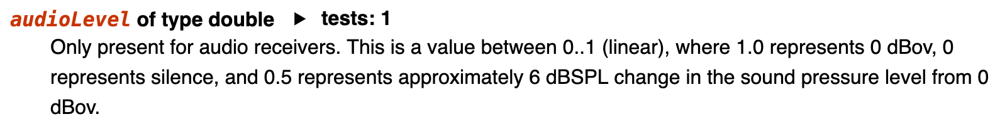
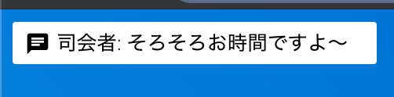

はじめまして
- Yuji Sugiura
- NTTコミュニケーションズ株式会社
- WebRTC寄りフロントエンドエンジニア
- SkyWayの中の人やってます


leader22/simple-p2p: The simple p2p module for modern browsers. - https://github.com/leader22/simple-p2p
WebRTCでP2Pしたいユースケースを、ひたすらシンプルにやるためのライブラリを書きました。
import { createTransport } from "simple-p2p";
const transport = createTransport({
iceServers: [{ urls: "stun:stun.l.google.com:19302" }]
});
// you need to do signaling by yourself
signaling.on("signal", data => transport.handleNegotiation(data));
transport.on("negotiation", data => signaling.signal(data));
await transport.startNegotiation();
const { mediaHandler } = transport;
// when remote sendTrack() has called,
mediaHandler.on("receiver", mediaReceiver => {
const { track, kind } = mediaReceiver;
renderMediaElement(track, kind);
});
const track = await navigator.mediaDevices.getUserMedia({ video: true })
.then(stream => stream.getTracks()[0]);
const mediaSender = await mediaHandler.sendTrack(track);

開発チームでも毎日の朝会から世間話まで、事あるごとに利用中。 多い日はリモートで10人🏠 + 2拠点🏢くらいで利用したりします。
こんなWebアプリを実装するのに必要な、
を紹介します。
Peer - JS SDK API Reference https://webrtc.ecl.ntt.com/skyway-js-sdk-doc/ja/peer/
const peer = new Peer({ /* key */ });
// これを待つのが重要
peer.once("open", () => {
// ...
});
// これを監視するのが重要
peer.on("error", () => {
// ...
})
すべてはここから。
Promiseでラップしてconst peer = await initPeer()みたいにするもよし。
https://github.com/skyway/skyway-js-sdk/blob/master/skyway-js.d.ts#L189-L239
const room = peer.joinRoom(roomName, {
mode: "sfu", // or "mesh"
stream
});
roomNameを指定して部屋に入る。
sfuとmeshで異なるモードが利用でき、省略するとmeshになります。
streamには、その部屋に送信したいMediaStreamを渡します。（videoのみ、audioのみ、video+audio、そもそも渡さない）
SFUについて - https://webrtc.ecl.ntt.com/sfu.html
SFURoom - JS SDK API Reference https://webrtc.ecl.ntt.com/skyway-js-sdk-doc/ja/sfuroom/ MeshRoom - JS SDK API Reference https://webrtc.ecl.ntt.com/skyway-js-sdk-doc/ja/meshroom/
modeによって異なるRoomになりますが、APIはほぼ一緒。
// 送信するストリームを変えたいとき
room.replaceStream(newStream);
// 部屋にデータを送信したいとき
room.send(data);
使うメソッドも2つだけ。
https://github.com/skyway/skyway-js-sdk/blob/master/skyway-js.d.ts#L147-L174
イベント一覧こちら。
// 自分が部屋にはいった
room.on("open", () => {});
// 誰かが部屋にはいってきた
room.on("peerJoin", peerId => {});
// 誰かが部屋からいなくなった
room.on("peerLeave", peerId => {});
// 誰かのストリームを受信した
room.on("stream", stream => {});
// 誰かのデータを受信した
room.on("data", data => {});
// 部屋が閉じた
room.on("close", () => {});
// なにかエラーがあった
room.on("error", err => {});
これだけでほとんど完成してるようなものではある・・。

const room = peer.joinRoom(roomName, {
mode: "sfu", // or "mesh"
stream
});
本UIにおけるSkyWay的な要素は以上です！
getUserMedia()で使うデバイスの取得と、そのデバイスを表すラベルの取得をします。
// 1. まずデバイスの存在有無を確認
const devices = await navigator.mediaDevices.enumerateDevices();
const hasVideoDevices = devices.filter(device => device.kind === "videoinput").length !== 0;
// 2. あったなら、許可を取る
await navigator.mediaDevices.getUserMedia({ video: true });
// 3. 許可が取れたら、ラベルを再取得する
const devicesWithLabel = await navigator.mediaDevices.enumerateDevices();
device.labelが取れないなど不都合ありgetUserMedia()でエラーになるなんて面倒なんでしょう😇
取得したdeviceIdを使って、getUserMedia()をやり直すだけ。
// device.deviceId を指定
const stream = await navigator.mediaDevices.getUserMedia({
video: {
deviceId: { exact: deviceId }
}
});
exactをつけるのが重要。
このstreamを、さっきのjoinRoom()に渡せばOK。
拡張なしで動くって素晴らしい😆
const displayStream = await navigator.mediaDevices.getDisplayMedia({ video: true });
const [videoTrack] = displayStream.getVideoTracks();
ちなみにコイツの「Stop sharing」は、

videoTrack.onendedを監視して制御します。
// mute
videoTrack.enabled = false;
// unmute
videoTrack.enabled = true;
MediaStreamTrackにはmutedといういかにもなプロパティが生えてますが、お探しのものはenabledです👻
これをやると、
なります。
0とまではいかないものの、帯域の節約になります。
帯域を0にしたい！そんなあなたには・・、
MediaStreamTrack#stop()RTCRtpSender#replaceTrack(null)replaceTrack(track)RTCRtpSender#getParameters() + setParameters()params.encodings[0].active = falseにするRTCPeerConnection#removeTrack(sender)inactiveにして通信そのものをやめる要件に応じてお好きな方法を。 （今のJS-SDKでやるなら1つ目しかないけど・・）
マイクの入力レベルをチェックできます。
WebAudio APIと組み合わせて実装します。
// コンテキストを初期化
const audioContext = new AudioContext();
// streamから入力ノードを作る
const sourceNode = audioContext.createMediaStreamSource(stream);
// 入力をチェックするためのノード
const analyserNode = audioContext.createAnalyser();
// 接続！
sourceNode.connect(analyserNode);
// 任意のタイミングで取得
const fft = new Float32Array(analyserNode.frequencyBinCount);
analyserNode.getFloatFrequencyData(fft);
自分で実装してもいいですが、用途が決まってるなら探せばライブラリあります。
https://w3c.github.io/webrtc-pc/#dom-rtcrtpcontributingsource-audiolevel

🕵️・・・！
const [receiver] = pc.getReceivers().filter(r => r.kind === "audio");
const [{ audioLevel }] = receiver.getSynchronizationSources();
いちおう使える・・が、各ブラウザで返り値の尺度が微妙に違います。（特にSafariおまえだけは(ry

人が増えたとき。
const streams = new Map();
// 受け取ったら取っておく
room.on("stream", stream => {
streams.set(stream.peerId, stream);
});
// 参加者数
const numOfParticipants = streams.size;
減ったとき。
// いなくなったら消す
room.on("peerLeave", peerId => {
streams.delete(peerId);
});
// ReactのJSXの例
<video srcObject={stream} muted playsInline />
<audio srcObject={stream} />
video+audioで描画するのがオススメです。（同じstreamを渡すだけ）
むしろこうしないと、iOS Safariで複数のストリームを再生できずに詰みます😇
VADしたいなら、このstreamをさっきと同じように使うだけ。
streamを、別のvideoで再生するだけaudioは描画しない or muted
// 送信
room.send("こんにちは");
// 受信
room.on("data", ({ src, data }) => {
console.log(`peerId: ${src} says ${data}`);
});
部屋にいる全ての人に送られる = ブロードキャストされます。
宛先を指定する機能はないです！

チャットと同じですが、いろいろsend()したくなるので最初から、
// チャット
room.send({ type: "chat", payload: "こんにちは" });
// リアクション
room.send({ type: "reaction", payload: "🆒" });
のようにするのが便利です。
room.on("data", ({ src, data: { type, payload }}) => {
switch (type) {
case "chat": return handleChat(src, payload);
case "reaction": return handleReaction(src, payload);
}
});
JSONにできるオブジェクトならそのまま送受信できます。

room.on()をひろって表示room.send()でSkyWayあんまり関係ないですね！
現状、MediaStreamTrackとMediaStreamの増減ができません。
いったん部屋をclose()して、再度joinRoom()すれば実現可能ではある・・😨😨😨
すべてのクラスがNodeJSのEventEmitter継承です。
つまり、
on()だけでなくonce()で1度きり拾えるremoveAllListeners(evName)が使えるerrorイベントは絶対に監視してくださいRTCPeerConnectionMediaStreamどうするのが正解？
性質が違うなら用途も違うはずなので、ちゃんと分ける。
どちらにせよ、UIコンポーネントの外側の世界に配置すること。（ReactならContextで注入したり）
コンポーネントの中（ライフサイクルの中）に適当に書くのダメゼッタイ🤮
src
├── conf
│ ├── components: 状態をもたない描画用コンポーネント
│ ├── effects: 状態を操作する処理（ReactHooks）
│ ├── observers: 描画しない状態を配る用コンポーネント
│ ├── stores: 状態そのもの（MobX）
│ └── utils: 雑多なもの
├── index
│ ├── components
│ └── utils
└── shared
10 directories, 63 files
行数にして3700行でした！
TypeScriptな上にCSS in JSな上にほぼコンポーネントなので、ロジックは1500行くらいなはず。
設計の詳細はこちらから。
React HooksとMobXをあわせて使う - console.lealog(); https://lealog.hateblo.jp/entry/2019/05/14/191623